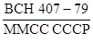
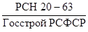

Министерство монтажных и
специальных
строительных работ СССР
УТВЕРЖДАЮ:
зам. министра монтажных
специальных строительных
работ СССР
К.К. Липодат
25 сентября 1979 г.
ИНСТРУКЦИЯ
ПО МОНТАЖУ АППАРАТОВ ВЫСОКОГО ДАВЛЕНИЯ
ВСН 407-79
ММСС СССР
Центральное бюро
научно-технической информации
Москва - 1981
СОДЕРЖАНИЕ
|
Технологическая подготовка к монтажу. 2 Приемка фундаментов (оснований) 2 Приемка аппаратов высокого давления в монтаж.. 2 2. Монтаж аппаратов высокого давления. 4 |
Настоящая инструкция содержит требования к подготовке, производству и приемке работ при монтаже всех видов аппаратов, работающих под давлением свыше 100 кгс/см2 (9,81 МПа).
С введением ее в действие утрачивают силу "Указания по монтажу аппаратов высокого давления Р от 100 до 700 кгс/см2" РСН 20-63/Госстрой РСФСР.
Инструкция предназначена для работников организаций, проектирующих и выполняющих работы по монтажу аппаратов высокого давления для химических, нефтеперерабатывающих и других заводов.
Разработана Гипрохиммонтажем Минмонтажспецстроя СССР в развитие главы СНиП III-31-78 "Технологическое оборудование. Основные положения".
Составители Ц.А. Дымов, Я.И. Шварц и И.З. Новомирова.
|
Минмонтажспецстрой СССР |
Ведомственные строительные нормы |
 |
|
Инструкция по монтажу аппаратов высокого давления |
Взамен  |
1.1. Требования настоящей инструкции должны выполняться при монтаже, испытании и приемке сосудов в аппаратов, работающих под давлением свыше 100 кгс/см2 (9,81 МПа), применяемых в химической, нефтехимической, нефтеперерабатывающей и смежных отраслях промышленности.
Требования инструкции распространяются на горизонтальные и вертикальные сосуды и аппарата, имеющие внутренний диаметр 400 - 3000 мм, длину корпуса не более 34 м и массу до 600 т.
1.2. При монтаже аппаратов высокого давления, кроме требований настоящей инструкции, необходимо выполнять правила глав СНиП: по монтажу технологического оборудования; бетонных и железобетонных конструкций монолитных и сборных; металлических конструкций; электротехнических устройств; по технике безопасности в строительстве, а также требования инструкции Минмонтажспецстроя СССР по установке технологического оборудования на фундаментах, согласованной с Госстроем СССР.
1.3. Подготовка к монтажу включает:
а) комплектацию блоков, узлов и деталей аппаратов, трубопроводов и металлоконструкций, механизмов, оснастки и приспособлений, необходимых для производства работ;
|
Внесены |
Утверждены |
Срок введения |
б) организацию монтажной площадки, инструментального хозяйства, устройство централизованных разводок сжатого воздуха, сварочных газов, электроэнергии, водоснабжения.
1.4. При подготовке аппаратов к монтажу должна быть предусмотрена площадка для подготовительных работ, как правило, в непосредственной близости от фундамента.
1.5. На площадке для подготовительных работ должны быть предусмотрены:
а) необходимые грузоподъемные средства;
б) источники водопитания необходимой производительности;
в) дренажные устройства для слива вода;
г) источники электропитания сварочных постов, электролебедок, механизированного инструмента и приспособлений.
Площадку для подготовительных работ следует оборудовать осветительными приборами для возможности работы в темное время суток. Количество приборов определяется в соответствии с "Указаниями по проектированию электрического освещения строительных площадок".
1.6. Площадка для подготовительных работ, как правило, должна быть забетонировала или выложена железобетонными плитами.
1.7. Отклонения фактических размеров фундаментов от проектных не должны превышать приведенных в главах СНиП на производство и приемку работ по устройству бетонных и железобетонных монолитных и сборных фундаментов, а опорных металлических конструкции - в главе СНиП по монтажу металлических конструкций.
1.8. Аппараты должны передаваться в монтаж в соответствии с графиком производства работ.
1.9. Распаковку и приемку аппаратов следует производить в присутствии представителя заказчика непосредственно в зоне монтажа.
1.10. Аппараты принимаются в монтаж в полностью собранном виде с установленными внутренними устройствами, не требующими разборки при монтаже, и с затворами, установленными на рабочее давление.
По условиям транспортировки в соответствии с требованиями технического проекта допускается отгружать сосуд в разобранном виде. При этом на заводе-изготовителе должна быть выполнена контрольная сборка с оформлением соответствующих документов, а доизготовление сосуда должно производиться заводом-изготовителем или привлеченной им организацией.
Вместе с аппаратом передаются в монтаж:
а) ответные фланцы с крепежными деталями и двумя комплектами рабочих прокладок одноразового пользования для всех штуцеров с фланцами и ниппельными соединениями;
б) фундаментные болты с закладными деталями для всех опорных частей оборудования, закрепляемого к фундаментам или другим основаниям (если болты предусмотрены техническим проектом);
в) комплект регулировочных винтов с контргайками и металлическими подкладками под торец (если эти винты предусмотрены техническим проектом);
г) специальный инструмент, приспособления, грузозахватные устройства, предусмотренные техническим проектом.
Приемка аппаратов производится внешним осмотром, при этом проверяются:
а) комплектность по отгрузочным спецификациям или упаковочным ластам;
б) отсутствие повреждений или других видимых дефектов;
в) наличие специального инструмента, приспособлений и грузозахватных устройств, поставляемых заводом-изготовителем (если они предусмотрены техническим проектом);
г) наличие на корпусе и штуцерах аппарата постоянных или временных (в зависимости от использования присоединительных отверстий) заглушек;
д) отсутствие загрязнения, окраски и смазки на опорной поверхности, подливаемой бетонной смесью.
1.11. При обнаружении некомплектности оборудования в процессе его приемки, а также дефектов при его монтаже, необходимо об этом поставить в известность заказчика и принять участие в составлении акта по форме ЦСУ № М-27.
1.12. Монтажной организации на время производства работ должна быть передана следующая заводская техническая документация:
паспорт на аппарат (сосуд);
сборочные и монтажные чертежи с указанием мест установки пломб (в случае необходимости), положения центра тяжести, схемы строповки;
акт об испытании аппарата;
инструкция по монтажу и эксплуатации;
ведомость специнструмента и приспособлений.
1.13. По способу хранения аппараты высокого давления относятся к первой группе и подлежат хранению на открытых площадках и эстакадах.
Для хранения аппараты должны быть уложены на шпалы так, чтобы исключались касание их с землей и возможность скапливания воды в отдельных местах аппарата. При необходимости эти места следует закрыть водонепроницаемым материалом.
1.14. Транспортировка аппаратов волоком и перекатом запрещается.
1.15. Поверхности аппаратов, законсервированные на время транспортировки и хранения защитными смазками и покрытиями (уплотняющие поверхности затворов, линз и штуцеров, гладкие и резьбовые отверстия и пр.), должны подвергаться расконсервации, а детали, соприкасающиеся с технологическим продуктом, - обезжириванию.
Аппараты, у которых обнаружены дефекты расконсервации, должны быть до передачи в монтаж подвергнуты заказчиком ревизии.
1.16. Стержни фундаментных болтов должны быть очищены от грязи, ржавчины и окалины. Мыть стержни керосином или соляровым маслом, а также смазывать их машинным маслом запрещается.
При загрязнении резьбы следует ее очистить, промыть, протереть, смазать маслом и провернуть, гайку.
2.1. Схемы монтажа аппаратов разрабатываются в проекте производства работ (ППР) в зависимости от габаритов и массы аппаратов, характеристики имеющихся монтажных средств, места установки аппаратов, высоты фундамента и т.д.
2.2. При выкладке вертикального аппарата (сосуда) перед подъемом необходимо ориентировать его штуцера, люки и отверстия таким образом, чтобы после установки аппарата в вертикальное положение не требовался разворот его вокруг оси.
2.3. Подъем вертикальных аппаратов высотой более 15 м, как правило, следует предусматривать с установленными на них обвязочными трубопроводами, обслуживающими металлоконструкциями и навесной теплоизоляцией.
2.4. Строповку аппаратов для подъема и установки следует производить в соответствии с указаниями на чертежах.
При отсутствии проектных обслуживающих площадок в местах установки строповочных устройств аппарата должны быть предусмотрены временные площадки.
2.5. Приварка к стенке корпуса аппарата кронштейнов, монтажных цапф и т.п. на монтажной площадке запрещается.
Крепить указанные детали к корпусу аппарата на монтажной площадке разрешается только к специальным накладкам, установленным на заводе-изготовителе, или с помощью хомутов.
2.6. При производстве монтажных работ с применением новой или сложной технологии, а также в случае, предусмотренном в задании на разработку ППР, монтажная организация обязана известить организацию, разработавшую ППР, о начале работ и вызвать ее представителей для осуществления технического надзора.
2.7. При выверке аппаратов высокого давления необходимо обеспечить:
совмещение в плане главных осей аппарата с осями фундамента;
требуемый зазор для подливки;
высотную отметку и вертикальность (горизонтальность, уклон).
Допускаемые отклонения, если отсутствуют специальные указания предприятия-изготовителя, должны быть не более, мм:
смещение осей в плане от осей фундамента - 10,
от проектной высотной отметки - 10,
от вертикали образующей / вертикального - 0,5 на 1 м,
аппарата / но не более 15
от горизонтали или проектного уклона - 0,5 на 1 м.
Вертикальность аппаратов, покрытых теплоизоляцией, проверяется по визирным маркам (штырям), ввернутым в бобышки на корпусе.
Выверку вертикальности следует выполнять по возможности в вечерние или утренние часы во избежание влияния солнечных лучей на точность результатов.
2.9. Горизонтальность и уклон необходимо проверять брусковым или рамным уровнем, которые устанавливаются на обработанную базовую поверхность или контрольную площадку в двух взаимно перпендикулярных направлениях.
2.10. Установка и выверка аппаратов высокого давления, в зависимости от массы аппарата, конструкции опоры и места установки производятся с подливкой бетоном следующими способами (в соответствии с ППР):
бесподкладочным на регулировочных винтах;
бесподкладочным на инвентарных установочных домкратах;
на точно выверенных жестких элементах;
на металлических подкладках (в случаях, технически обоснованных заводом-изготовителем).
2.11. Выверка аппаратов должна выполняться в соответствия с требованиями "Инструкции по установке технологического оборудования на фундаментах" ВСН 361-76/ММСС СССР.
2.12. Выверка аппаратов, устанавливаемых на постаментах или опорных плитах, должна производиться в следующем порядке:
а) установка постамента на выверенные жесткие элементы;
б) предварительная выверка постамента по осям в плане, горизонтальности и высоте; допускаемые отклонения должны удовлетворять требованиям п. 2.7 настоящей инструкции;
в) установка аппарата на постамент;
г) контрольная проверка выверенного аппарата совместно с постаментом согласно требованиям п. 2.8 настоящей инструкции. При необходимости выверки аппарата совместно с постаментом необходима одновременная работа крана.
2.13. Закрепление аппаратов (постаментов) к фундаментам и основаниям осуществляется с помощью болтов анкерных и фундаментных для химического и нефтяного оборудования по ОСТ 26-956-74 - ОСТ 26-980-74.
2.14. При закреплении аппаратов с помощью разъемных фундаментных болтов должна быть обеспечена проектная глубина завинчивания верхней части болта в муфту.
2.15. При монтаже бесподкладочным способом предварительное закрепление оборудования в проектном положении на время подливки должно производиться с помощью стандартных гаечных кличей без надставок.
2.16. После окончания подливки до затвердения бетонной смеси необходимо выполнить контрольную проверку выверенного положения аппарата.
2.17. Окончательную затяжку фундаментных болтов следует производить после достижения бетоном подливки не менее 50 % прочности, о чем необходимо получить соответствующую справку строительной организации.
2.18. Монтаж и испытание присоединительных трубопроводов производятся в соответствии с инструкцией по монтажу и испытанию трубопроводов диаметром условного прохода до 400 мм включительно на давление 100 - 3000 кгс/см2 (294,3 МПа).
2.19. Сдача смонтированного аппарата в комплексное опробование должна осуществляться в установленном порядке после окончательного закрепления его на фундаменте с составлением акта.
Правильность установки аппаратов на фундамент (основание) оформляется актом по форме, приведенной в приложении к главе СНиП по монтажу технологического оборудования.
2.20. Насадка загружается в аппарат заказчиком после установки его на фундамент.
2.21. При монтаже горизонтальных аппаратов должна быть обеспечена правильность крепления подвижной опоры. Между болтами и болтовыми пазами подвижной опоры должны быть зазоры, соответствующие заводским чертежам и обеспечивающие свободное удлинение корпуса под действием рабочих температур. Трущиеся поверхности необходимо смазать графитной сказкой.
2.22. Опора верха вертикального аппарата, если она предусмотрена технической документацией, устанавливается после обстройки аппарата металлическими конструкциями.
Специальные болты опоры верха должны быть законтрены, при этом величина зазора между корпусом аппарата и специальным болтом должна соответствовать требованиям технической документация.
2.23. Аппараты, поступающие в монтаж полностью собранными и испытанными заводом-изготовителем, не должны подвергаться индивидуальным испытаниям на прочность и плотность, если с момента проведения указанных испытаний на заводе-изготовителе прошло менее 12 месяцев и аппараты не получили повреждений при транспортировке к месту установки. После истечения гарантийного срока испытания на прочность и плотность производит заказчик.
2.24. Аппараты, которые в соответствии с указаниями проектной документации должны подвергаться испытанию на герметичность (на "падение давления"), подвергаются этому испытанию в процессе комплексного опробования совместно с обвязочными трубопроводами.
2.25. Пневматическое испытание каждого аппарата отдельно можно не производить, а испытать смонтированные аппараты в комплексе со всеми или частью аппаратов технологической линии.
2.26. Пневматическое испытание аппаратов на герметичность с замером падения давления за период испытания должно производиться по схеме, определенной заказчиком, и под его непосредственным руководством.
3.1. К специальным работам, выполняемым в процессе монтажа аппаратов высокого давления и после его окончания, относятся:
монтаж КИП и средств автоматизации;
тепловая изоляция.
3.2. Тепловая изоляция выполняется специализированной организацией, как правило, после регистрации аппарата заказчиком в органах Госгортехнадзора в установленном порядке.
Втулки, скобы и другие детали для крепления теплоизоляции привариваются на заводе-изготовителе.
Съемные устройства для крепления теплоизоляция (стяжки и бандажи) устанавливаются организацией, производящей теплоизоляционные работы.
4.1. При монтаже аппаратов высокого давления необходимо соблюдать правила главы СНиП по технике безопасности в строительстве.
4.2. Монтаж аппаратов массой свыше 50 т вне зданий разрешается только в светлое время суток при нормальной видимости всех элементов грузоподъемных, грузозахватных и вспомогательных средств.
4.3. Во время подъема необходимо обеспечить дежурство электриков и медперсонала на монтажной площадке. При вынужденной остановке подъема поднятый аппарат (блок) необходимо предохранить от перемещения (самоопускания, раскачивания я др.).
4.4. Перед началом монтажных работ следует ознакомить с ППР всех участников подъема аппарата, провести инструктаж по технологии производства работ, технике безопасности и персональным обязанностям.
При особо сложных условиях производства работ и монтаже уникальных аппаратов следует провести предварительную отработку необходимых команд и действий.
4.5. Монтаж аппарата следует начинать с пробного подъема на 200 - 300 мм от опоры, при этом должно быть проверено состояние всех механизмов и грузоподъемных средств, после чего руководитель подъема дает разрешение на его продолжение.
4.6. При пневматическом испытании оборудования на герметичность необходимо:
оградить и обозначить знаками зону испытаний;
не допускать посторонних лиц в зону испытаний;
предупредить работающих на смежных участках о времени проведения испытания.
4.7. При пневматическом испытании на герметичность запрещается:
находиться перед люками, заглушками и фланцевыми соединениями сосудов, работающих под давлением;
снимать защитные ограждения.
4.8. Осмотр оборудования должен производиться после снижения давления до рабочего. При осмотре оборудования повышение давления запрещается.